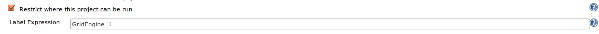
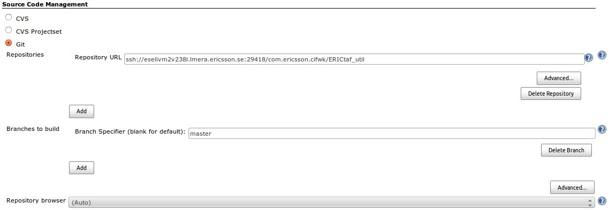
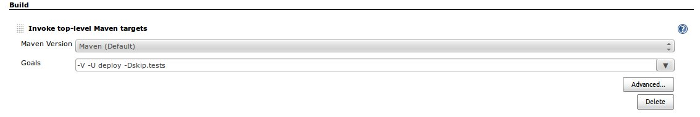
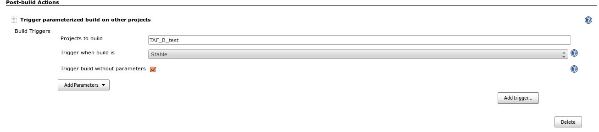
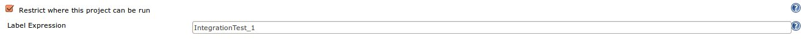
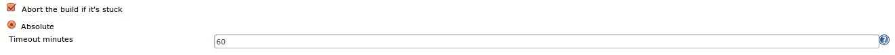
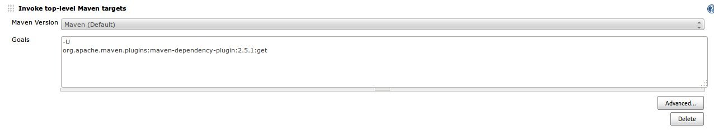
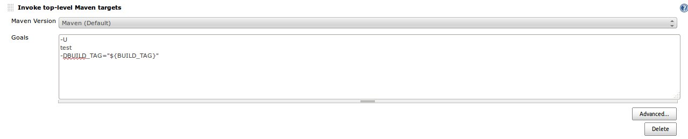
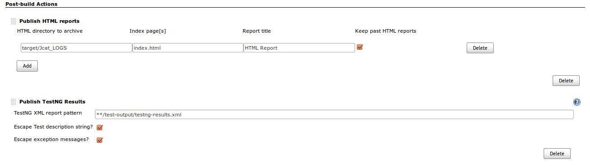

Introduction
This story comes from teams asking the question "How do I get my testware project into CI and how should my testcases get executed". The teams want to know what is the preferred strategy for developing, building, deploying and executing their testware projects. There is a clear ambition of how and where testware sits in the overall CI life cycle of a product (as can be seen in many CI flow presentations). As time progresses, more and more components of the overall ambition level are being put in place. The purpose of this page is to outline the current best practices / ways of working based on the components that are available today. This page will be updated regularly to reflect any changes to the latest position as more components of the overall ambition level components are put in place.
This page hopes to address the following topics
- storage of testware artifact
- branching strategy i.e. do we just need master & release??
- building of a testware artifact needs to be documented
Version Strategy
This one is easy - maven will take care of this for us. Testware will start off a 1.0.1-SNAPSHOT and the revision updates will be controlled by maven (as per normal practices) and increased on every successful release.
Should the team wish to change the major or minor version of the artifact, then this would be done using the normal CI channels.
Storage of Testware
Normal CI flow will also kick in here - as testware is built and released it will be stored as jars in Nexus.
Branching Strategy
Each team's branching strategy for testware should mirror their branching strategy for their application code. One question that pops up here is, should a team use a 'master' branch as well as a 'Release' branch - this will be up to the team to consider in line with their own branching strategy (or be dictated by a higher level branching strategy e.g. a TOR branching strategy).
In the absence of a clear strategy, the suggestion is that each team build and release from their 'master' branch.
Build -> Deploy -> Run
This section will attempt to cover all that fits between a push in git up to and including test cases being executed (and everything in between).As you would expect we want to leverage the CI flow as much as possible and have every step as automated as possible, so as you might expect Jenkins, Maven and Git will be an integral part of this process.
Prerequisites:
Before we get into the 'nuts and bolts' of how this will work we need to take care of some prerequisites
Product number in top level pom
In order to be able to map testware to products and visa verse all testware will need to have product numbers in the properties section of your top level pom - see below for example
<properties>
......
<CXP>CXP1234567</CXP>
<project.build.sourceEncoding>UTF-8</project.build.sourceEncoding>
......
</properties>
Once the above is inserted in the pom, the testware - product mapping can be done in the CI FWK portal. https://cifwk-oss.lmera.ericsson.se/
Use the latest version of TAF
Obviously!!!!!
Building, deploying and running
As of now building, deploying and running testware will require two jenkins jobs
- one job to build the testware and deploy the built artifact to Nexus - will be done on a hub CI server
- second job to execute the testware - will be ran from a CI server in the local ITTE network
In the future there will be an additional steps to bring up test environments, deploy known good baseline software and subsequently execute testware against these deployments, this will be done as part of the overall CI flow. It may be materialized in the form of separate jenkins jobs or possibly a pre steps in the jenkins job that executes the testware. |
Jenkins job #1 - build and deploy to Nexus
This is a standard jenkins job, it should have the following components
- restrict where the project is to be build - as this is a simple build job it can be built in the build farm e.g. "GridEngine_1

- SCM management - repo and branch to build

- build trigger - what ever way the team wants to trigger a build
- invoke top level maven target - minimum goals should be "-V -U clean deploy -Dskip.tests"
- build trigger - what ever way the team wants to trigger a build


a team may want to include extra maven goals e.g PMD, Cobertura / Jococo . etc
- post build step to call the jenkins testcase execution job

Jenkins job #2 - run the testware
This is a slightly less standard jenkins job, but it should have the following components
- restrict where the project is to be build - we want this job to be executed on the CI server in the local ITTE network e.g "Integrationtest_1"

- build trigger - should be triggered by jenkins job #1
- SCM management - none
- might want to limit the time the build takes i.e. tick the "Abort the build if it's stuck" and set a timeout

- invoke top level maven target - get the dependencies - see screen clip

- invoke top level maven target - run the tests - see screen clip

- post build step to publish the HTML and TestNG reporta - see screen clip
- 
{kind=link}
{kind=link}
{kind=link}
{kind=link}
{kind=link}
{kind=link}
{kind=link}
{kind=link}
{kind=link}
{kind=link}